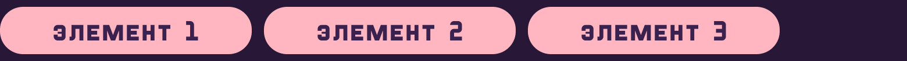

модуль 3. гайд по flexbox
Научитесь использовать Flexbox, чтобы ваши элементы всегда находили свое место! Это магия, которая делает адаптивный дизайн простым и стильным.
Научитесь использовать Flexbox, чтобы ваши элементы всегда находили свое место! Это магия, которая делает адаптивный дизайн простым и стильным.
Flexbox (или Flexible Box Layout) — это свойство CSS, которое помогает легко и быстро устанавливать расположение и размеры элементов на веб-странице. Представь, что Flexbox — это волшебный помощник, который упрощает расстановку элементов, делая всю невозможную работу за тебя.
С Flexbox ты сможешь:
Теперь давай разберемся с основными свойствами, которые ты будешь использовать для создания контейнеров Flexbox:
Это свойство активирует Flexbox для элемента. Элементы внутри него станут флекс-элементами.
Определяет направление, в котором будут располагаться флекс-элементы.
Напрмер row (горизонтально)
Или column (вертикально)
Устанавливает выравнивание элементов по основной оси (горизонтальной или вертикальной). Используй его, чтобы настроить пространство между элементами.
Например flex-start:
Center:
Flex-end:
Space-between:
Space-around:
Устанавливает выравнивание элементов по поперечной оси. Это поможет тебе управлять вертикальным выравниванием.
Например flex-start:
Center:
Flex-end:
Stretch:
А теперь давай создадим свой интернет-магазин с карточками товаров! Я покажу тебе все шаги, включая фрагменты кода, чтобы тебе было легче понять, как это работает.
Начнем со структуры. Нам нужно разметить шапку, подвал и основную часть страницы в body, а также настроить пару моментов в head:
Далее наполним сайт объектами:
Ну и добавим карточки, разместив их в div-контейнерах. Я выбрала сумки в качестве примера, именно это повторять необязательно. Попробуй включить креатив и найти какие-то крутые товары для своего первого марктеплейса!
Теперь займемся стилями. Сначала напишем базу:
Затем добавим стили для шапки, навигации и подвала, чтобы они выглядели аккуратно и были удобны для использования:
Теперь настроим стили для контейнера и самих карточек:
Ну и закончим на стилях для изображений внутри карточек и для кнопок:
Должно получиться так:
Теперь ты знаешь, что такое Flexbox и как с помощью него создавать адаптивные макеты!
Помни, чем больше ты будешь практиковаться, тем более сложные и стильные проекты сможешь создавать. Если хочется сильнее углубиться в эту тему, более подробный гайд по Flexbox ты сможешь прочитать по этой ссылке. Вперед, дерзай и экспериментируй!